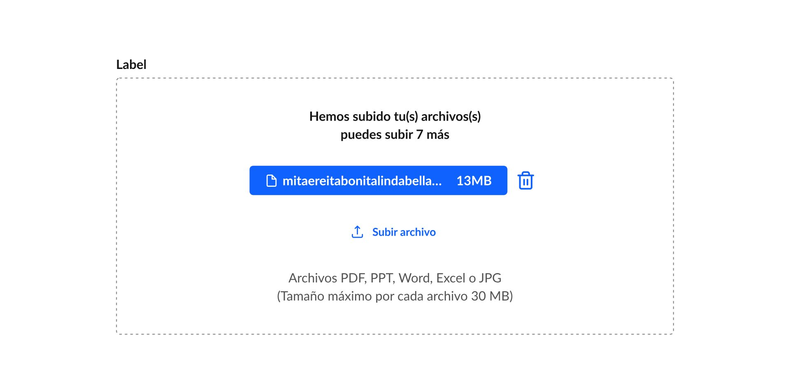
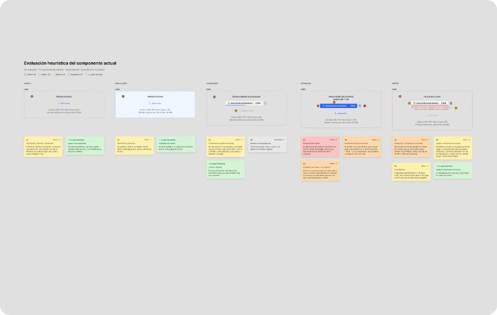
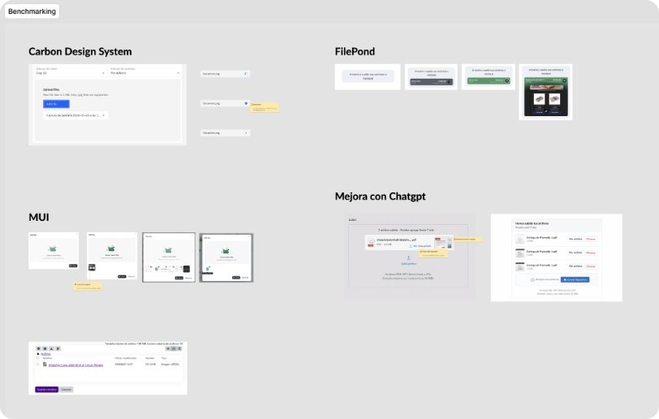
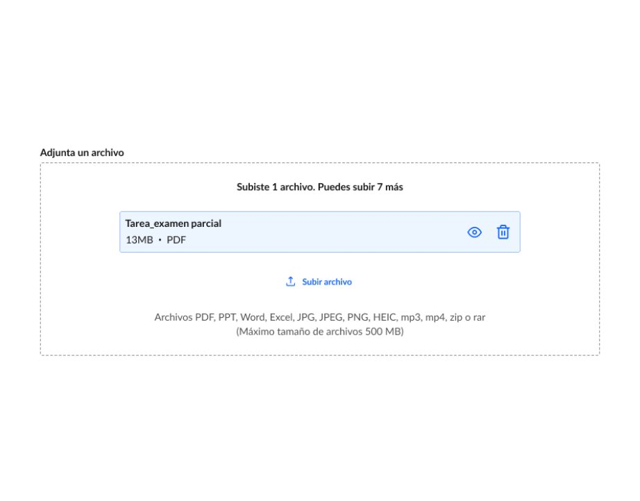

Mejora del drag and drop en UTP+Class: validar la tarea antes de entregarlaImproving drag and drop in UTP+Class: checking the assignment before submitting it
- CLIENTECLIENT
- Universidad Tecnológica del PerúUniversidad Tecnológica del Perú
- PRODUCTOPRODUCT
- UTP+ClassUTP+Class
- ALCANCESCOPE
- Drag and drop en la entrega de tareasDrag and drop in assignment submission
- MÉTODOMETHOD
- Encuesta, heurística, benchmarking, test A/B y guerrillaSurvey, heuristics, benchmarking, A/B test and guerrilla testing
IntroducciónIntroduction
UTP+Class es la plataforma educativa de la Universidad Tecnológica del Perú. Entregar tareas es lo que más hacen los estudiantes en ella: más del 87% la usa para eso, en todas las modalidades (presencial, remota y virtual).UTP+Class is the learning platform of Universidad Tecnológica del Perú. Submitting assignments is what students do most on it: over 87% use it for that, across all formats (on-site, remote and online).
El problema era simple pero frecuente: al subir un archivo, el estudiante no tenía forma de confirmar que era el correcto antes de enviarlo. Si se equivocaba, lo descubría tarde.The problem was simple but frequent: when uploading a file, students had no way to confirm it was the right one before sending it. If they got it wrong, they found out too late.
Mi rol en el proyectoMy role in the project
Diseñé este proyecto como UX Designer, a partir de los datos de la encuesta de satisfacción que me compartieron. Me encargué del análisis de la problemática, la evaluación heurística del componente, el benchmarking, el diseño de dos propuestas para un test A/B y su validación con estudiantes mediante Maze y test de guerrilla en sede de la universidad.I designed this project as a UX Designer, based on satisfaction survey data shared with me. I handled the problem analysis, the heuristic evaluation of the component, benchmarking, the design of two proposals for an A/B test, and their validation with students through Maze and guerrilla testing on campus.
El problemaThe problem
En la encuesta de satisfacción aplicada a 59,612 estudiantes matriculados en marzo, el 42.5% reportó fricción por no poder previsualizar el archivo antes de entregarlo. Fue la principal oportunidad de mejora dentro del flujo de entrega de tareas.In the satisfaction survey of 59,612 students enrolled in March, 42.5% reported friction from not being able to preview the file before submitting it. It was the main improvement opportunity in the submission flow.
42.5%de 59,612 estudiantes reportó fricción por no poder previsualizar su archivo.of 59,612 students reported friction from not being able to preview their file.
+87%de los estudiantes usa UTP+Class para entregar tareas, en todas las modalidades.of students use UTP+Class to submit assignments, across all formats.
No es solo un tema de interfaz: afecta la confianza del estudiante en un momento sensible, cuando entrega algo que se va a calificar.It’s not just an interface issue: it affects students’ confidence at a sensitive moment, when they’re submitting something that will be graded.

Componente actual: el estudiante solo ve el nombre del archivo, sin forma de revisar su contenido.Current component: students only see the file name, with no way to check its content.
A qué apuntamosWhat we aimed for
Evaluar qué forma de validar el archivo genera más claridad, control y confianza antes de entregar. En concreto, queríamos saber si el estudiante:Evaluate which way of checking the file creates more clarity, control and confidence before submitting. Specifically, we wanted to know whether the student:
01Entiende de forma inmediata que su archivo se cargó correctamente.Immediately understands that their file uploaded correctly.
02Puede verificar que el archivo cargado es el correcto.Can verify that the uploaded file is the right one.
03Se siente más seguro al momento de entregar.Feels more confident when submitting.
HipótesisHypothesis
Si el sistema ofrece una validación clara e inmediata del archivo antes del envío, el estudiante entregará con más seguridad.If the system offers clear, immediate validation of the file before sending, students will submit with more confidence.

MetaTarget
Reducir en 30% relativo la fricción reportada (de 42.5% a ~30%). Asumimos que la solución ataca directamente la causa, pero que no todos los estudiantes descubrirían la previsualización por su cuenta. Se valida en la próxima encuesta de satisfacción.Cut reported friction by 30% relative (from 42.5% to ~30%). We assumed the solution tackles the cause directly, but not every student would discover the preview on their own. It will be validated in the next satisfaction survey.
InvestigaciónResearch
Evaluación heurísticaHeuristic evaluation
Revisamos el componente drag and drop actual para ubicar los puntos de fricción específicos en la interfaz.We reviewed the current drag and drop component to pinpoint specific friction points in the interface.

Benchmarking referencialReference benchmarking
Analizamos cómo otras plataformas resuelven la carga y validación de documentos.We looked at how other platforms handle uploading and checking documents.

Dos formas de validar el archivoTwo ways to check the file
A partir de la heurística y el benchmarking diseñamos dos propuestas. Ambas comparten un cambio base: el archivo cargado cambia de fondo para confirmar visualmente que la carga fue exitosa.Based on the heuristics and benchmarking, we designed two proposals. Both share a base change: the uploaded file changes background to visually confirm the upload worked.
Propuesta AProposal A
Previsualizar sin salir del flujoPreview without leaving the flow
Un ícono de ojo abre el archivo en el visor integrado (PDFtron), dentro de la misma pantalla.An eye icon opens the file in the built-in viewer (PDFtron), on the same screen.
Propuesta BProposal B
Validar descargandoCheck by downloading
El nombre del archivo funciona como link de descarga. El estudiante sale del flujo para revisarlo.The file name works as a download link. Students leave the flow to check it.
Test A/BA/B test
Armamos un Maze por propuesta con tres misiones y luego medimos percepción con escala Likert del 1 al 5. Invitamos por correo a 4,000 estudiantes del ciclo de verano que hubieran subido al menos una tarea. La tasa de respuesta fue baja, así que fuimos a una sede de la UTP a hacer test de guerrilla hasta completar la muestra.We built one Maze per proposal with three missions, then measured perception on a 1 to 5 Likert scale. We emailed 4,000 summer-term students who had uploaded at least one assignment. The response rate was low, so we went to a UTP campus to run guerrilla tests until we completed the sample.
Misión 01Mission 01Adjuntar un archivo (desktop)Attach a file (desktop)
Misión 02Mission 02Validar el archivo subido (desktop)Check the uploaded file (desktop)
Misión 03Mission 03Validar el archivo (mobile)Check the file (mobile)
20 respuestas en la propuesta A y 19 en la B. El test presencial además nos dejó ver reacciones, resolver dudas en el momento y escuchar comentarios que no escribirían en un formulario.20 responses for proposal A and 19 for B. Testing in person also let us see reactions, answer questions on the spot and hear comments people wouldn’t write in a form.
ResultadosResults
62.5%de las menciones a la pregunta “¿Qué mejorarías para sentirte seguro antes de entregar?” pidió poder ver o revisar el archivo antes de enviarlo (25 de 40). La necesidad se confirmó.of mentions to the question “What would you improve to feel confident before submitting?” asked to be able to see or check the file before sending it (25 of 40). The need was confirmed.
Éxito por misiónSuccess by mission
Porcentaje de estudiantes que completó cada misión.Percentage of students who completed each mission.
| Adjuntar (desktop)Attach (desktop) | Validar (desktop)Check (desktop) | Validar (mobile)Check (mobile) |
|---|
| Propuesta A (n=20)Proposal A (n=20) | 100% | 100% | 95% |
|---|
| Propuesta B (n=19)Proposal B (n=19) | 89.5% | 94.7% | 89.5% |
|---|
Percepción (escala Likert 1 a 5)Perception (Likert scale 1 to 5)
Propuesta AProposal APropuesta BProposal B
Claridad tras la cargaClarity after upload Validación del archivoFile validation Seguridad antes de entregarConfidence before submitting Claridad de las accionesClarity of actions
El dato que complicó la decisiónThe data point that complicated the decision
6.2 sPropuesta BProposal B
10.7 sPropuesta AProposal A
Validar el archivo fue más rápido en B, porque el link de texto se reconocía antes que el ícono de ojo. Todos encontraron el ojo, pero tardaron más.Checking the file was faster in B, because the text link was recognized sooner than the eye icon. Everyone found the eye, but it took them longer.
Lo que dijeron sobre AWhat they said about A
Valoraron poder previsualizar sin salir del flujo y la describieron como fácil e intuitiva.They valued previewing without leaving the flow and described it as easy and intuitive.
Lo que dijeron sobre BWhat they said about B
Varios mencionaron que descargar no es cómodo y que les generaba archivos duplicados.Several said downloading isn’t convenient and left them with duplicate files.
Decisión de diseñoDesign decision
Propuesta A · implementada en UTP+ClassProposal A · live in UTP+Class
El ícono de ojo se eligió porque es una convención reconocida para “ver”, y permite revisar el archivo sin salir del flujo.The eye icon was chosen because it’s a widely recognized convention for “view”, and it lets students check the file without leaving the flow.
Aunque B fue más rápida, la propuesta A ganó en éxito de tareas y en todas las métricas de percepción. Priorizamos confianza sobre velocidad: el problema de origen no era que entregar tomara tiempo, sino que el estudiante no estaba seguro de lo que entregaba.Although B was faster, proposal A won on task success and on every perception metric. We prioritized confidence over speed: the original problem wasn’t that submitting took time, but that students weren’t sure what they were submitting.

AprendizajesLearnings
Más rápido no siempre es mejorFaster isn’t always better
El tiempo favorecía a B, pero leído solo hubiera llevado a la decisión equivocada. Cruzar comportamiento, percepción y comentarios fue lo que dio la respuesta.Time favored B, but read on its own it would have led to the wrong decision. Combining behavior, perception and comments is what gave us the answer.
El correo no basta para reclutarEmail isn’t enough to recruit
La guerrilla en sede completó la muestra y además nos dio contexto que el test remoto no captura.Guerrilla testing on campus completed the sample and gave us context remote testing doesn’t capture.
39 estudiantes marcan dirección39 students set a direction
Una muestra así orienta la decisión, pero no da certeza. Por eso el impacto se mide ya implementado.A sample like this guides the decision but doesn’t give certainty. That’s why impact is measured once it’s live.
Siguientes pasosNext steps
La propuesta A ya está en producción. El siguiente paso es medir su impacto en la próxima encuesta de satisfacción, comparando contra el 42.5% de línea base, y seguir el uso del ícono de previsualización para entender cuántos estudiantes validan su archivo antes de entregar.Proposal A is already in production. The next step is to measure its impact in the next satisfaction survey against the 42.5% baseline, and track use of the preview icon to understand how many students check their file before submitting.
Una oportunidad abierta: acompañar el ícono de ojo con un texto “Ver” para que se identifique tan rápido como el link de la propuesta B.An open opportunity: pair the eye icon with a “View” label so it’s recognized as quickly as proposal B’s link.